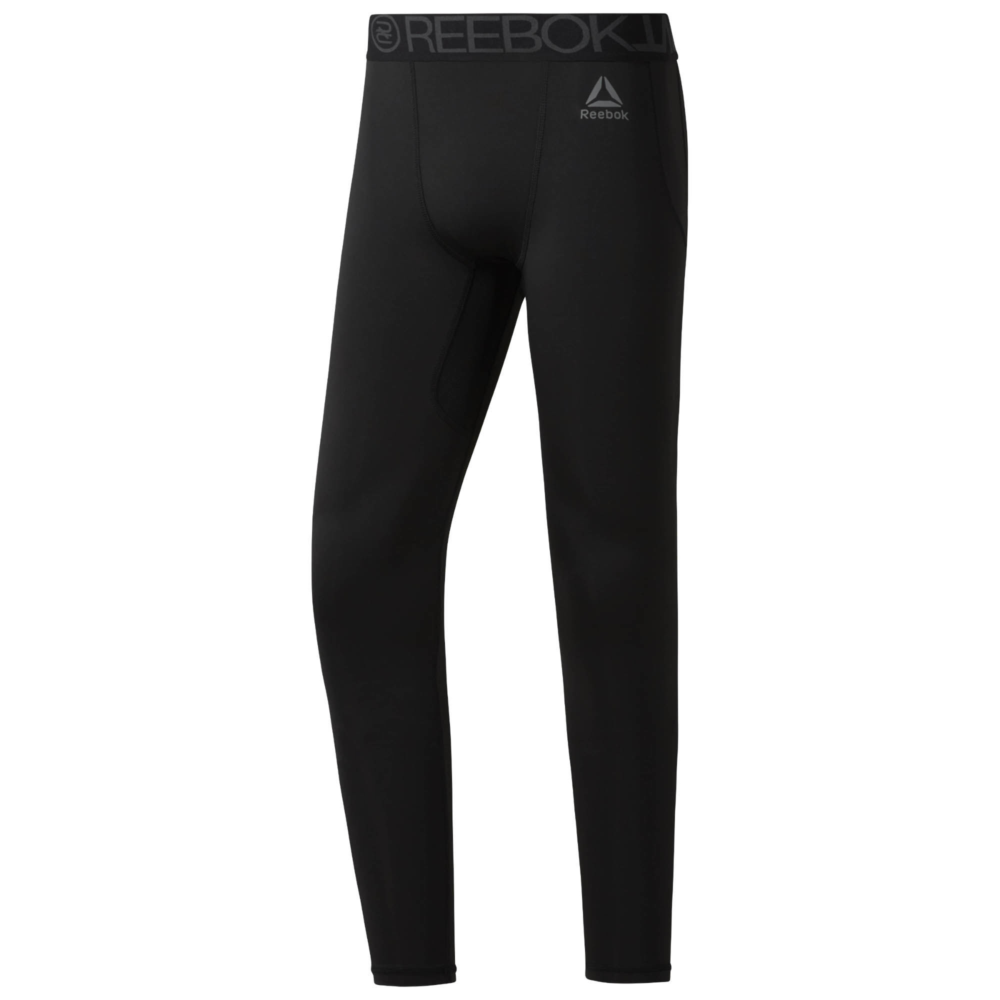

ТАЙТСЫ COMBAT
Описание товара
Тайтсы для единоборств
Цена: 4 390 ₽Характеристики товара
- Идеально для занятий единоборствами, поддержки мышц
- Компрессионный крой, идеально прилегающий к телу, обеспечивает максимальную поддержку мышц
- Технология Speedwick отводит излишки влаги с поверхности тела, оставляя ощущение сухости и комфорта
- Материал: Материал: 85% переработанный полиэстер / 15% полиэстер, ткань интерлок; вторичное использование материалов позволяет сохранить природные ресурсы и уменьшить выбросы в атмосферу
- Страна-производитель: Филиппины
Подробное описание товара
Эти тайтсы «заточены» под активные тренировки, благодаря компрессионной ткани, которая эффективно поддерживает мышцы. Сетчатые вставки из материала ACTIVCHILL обеспечивают дополнительную вентиляцию. Антибактериальная обработка предотвращает появление неприятного запаха, а жаккардовый пояс гарантирует комфортную и плотную посадку.